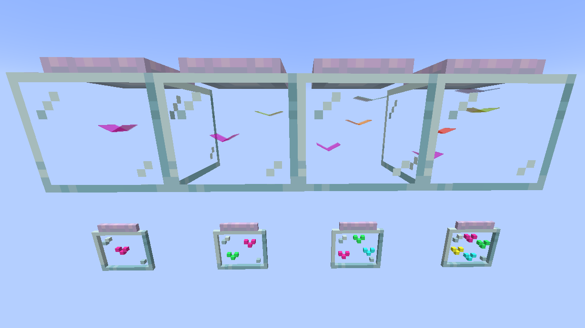
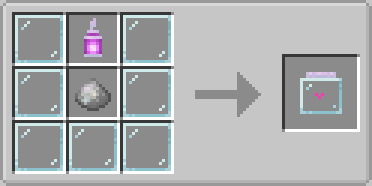
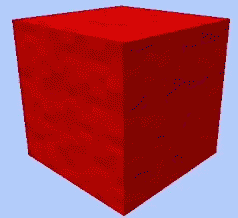
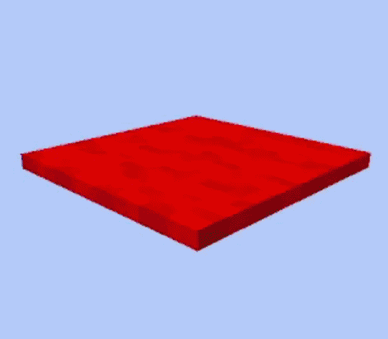

GILE DOCUMENTATION
End Threshold (Overworld Biome)
Fragments of the Moon that crashed into the Overworld! This night-sky-colored biome brings a piece of the End dimension right to your front door.

- Terrain: Massive End Stone and Moon Sand blobs integrated into the surface.
- Flora: Normal and Glowing Chorus plants grow rarely here. Inverted Oak trees with normal grass and moon flowers are much more frequent.
- Mobs: In night time endermen spawn. But there is also the Glitter mob, that can only be found in this biome. A very small peacefull flying mob. Drops glitter particles while flying and has no constant color - it is changing them all the time. With only 1 heart (2 HP) - it drops Dust, that is needed to craft the Jar Of Glitters - a way to bring some glitters in your home! If not that, there is also Glitter Block and Glitter Carpet.
Inverted Oak Wood
Its unique Inverted Oak wood have its proper wood type, for every vanilla recipe as expected. Except boat, because there is no water in the End.


Glitter
Flying · Peaceful · Overworld 2 HP
2 HP
Spawns in small groups only in the End Leftovers Biome.
Idles everywhere with no goal. Exists just for the ambience of the biome and of your house too.
Have slow RGB texture layer animation and a semi-transparent model.
 0-2
0-2

Dust from glitters can be used to craft Jar of Glitters. If clicked on with dust, increment glitters mobs count inside from 1 to 4. To take it with you, break the jar with any silktouch enchanted tool or hand. If broken with any not silktouch enchanted tool, it disappears and lets glitters out.


Dust from glitters can be used alternatively instead of star dust to craft Glitter Blocks. Can be crafted also by placing 3 carpets in one column on crafting grid.


Dust from glitters can be used alternatively instead of star dust to craft Glitter Carpet too. Or just use blocks just like in a wool carpet recipe.